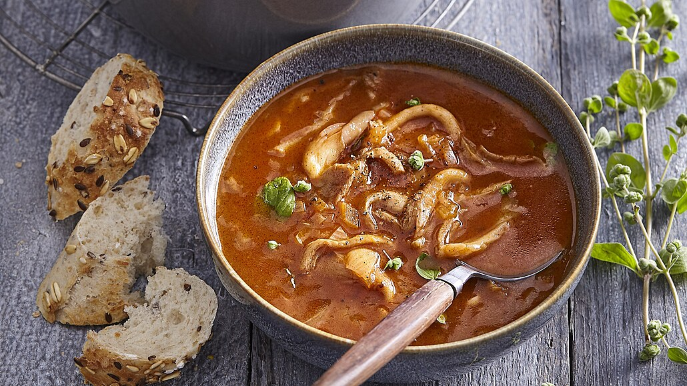

Tradiční česká dršťková polévka z očistěných drštěk se sladkou paprikou a majoránkou.
Omyté a očištěné dršťky nakrájíme na větší kusy a dáme je vařit do studené vody. Přivedeme k varu, vodu slijeme. Tento postup opakujeme 3–4×.
Poté dršťky zalijeme studenou vodou, osolíme a vaříme do měkka. Měkké maso vyjmeme a vývar ponecháme.
Po částečném vychladnutí dršťky nakrájíme na nudličky.
Na rozehřátém sádle osmahneme cibuli do světle růžova, přidáme mouku a uděláme světlou jíšku. Nakonec vmícháme sladkou papriku a odstavíme z plotny.
Jíšku zalijeme za stálého prošlehávání metličkou vývarem z drštěk, přivedeme k varu. Pokud je potřeba, naředíme vodou na cca 3 litry. Přidáme kmín, pepř a pozvolna vaříme 20–30 minut. V průběhu přidáme rozetřený česnek.
Polévku můžeme procedit (není nutné), přidáme nakrájené dršťky a ještě provaříme. Dochutíme solí, pepřem a nakonec přidáme rozemnutou majoránku.